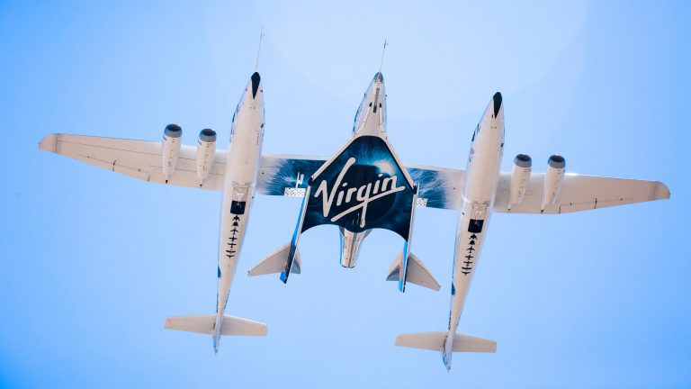
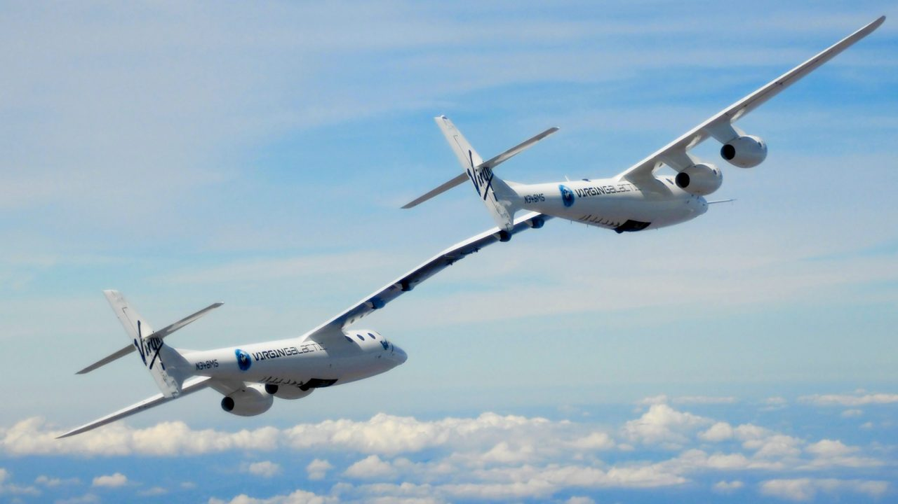
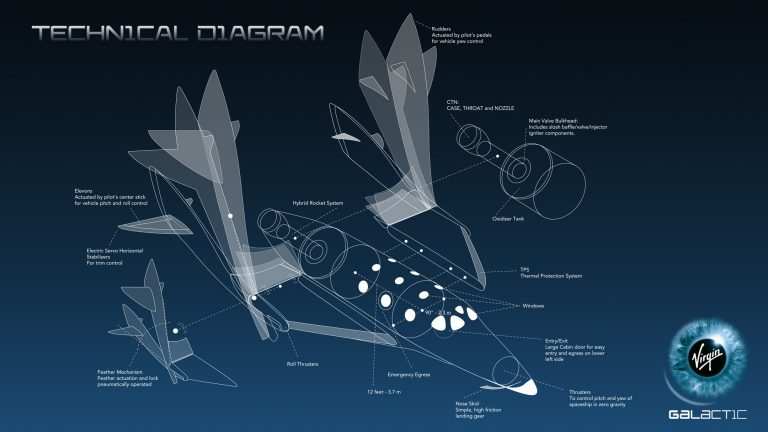
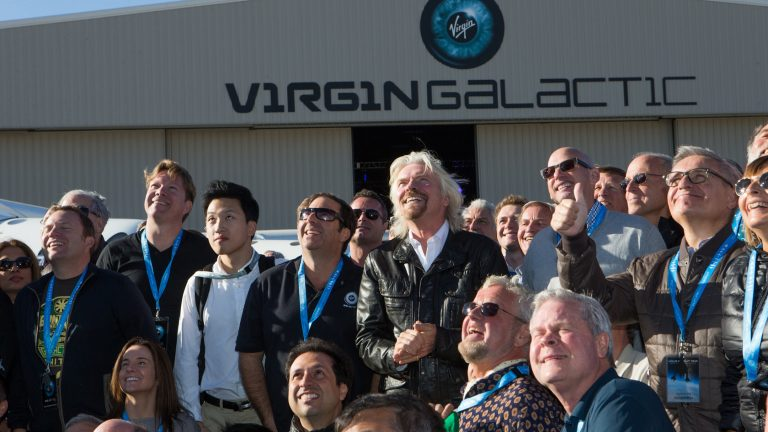
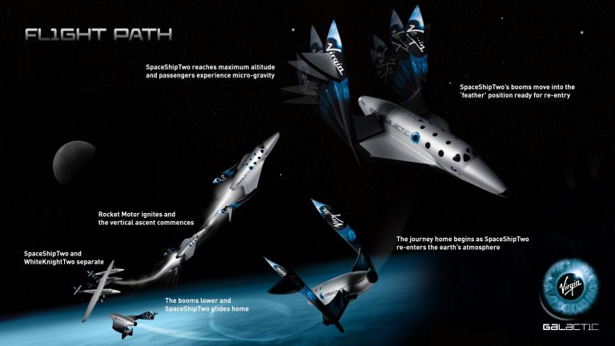
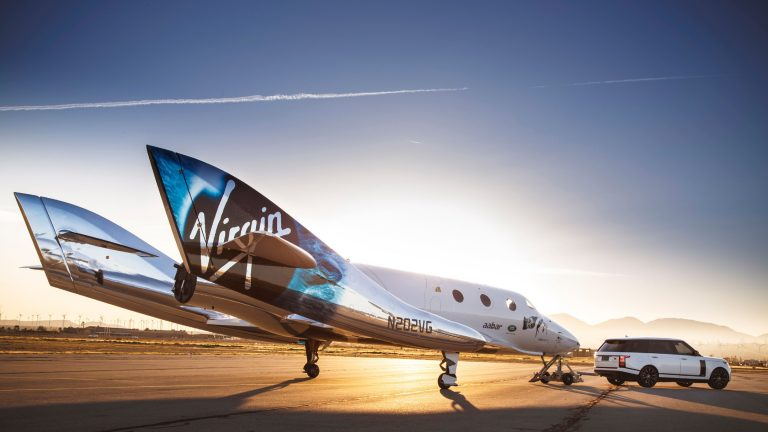

These are the vehicles that will take you to space.
Virgin Galactic operates the reusable SpaceShipTwo spaceflight system – consisting of WhiteKnightTwo, a custom-built, carrier aircraft, and SpaceShipTwo, the world’s first passenger carrying spaceship to be built by a private company and operated in commercial service.

WhiteKnightTwo
WhiteKnightTwo is a custom-built, four-engine, dual-fuselage jet aircraft, designed to carry SpaceShipTwo up to an altitude of ~50,000 feet.
The concept of air-launching space vehicles is not new, but is ideally suited to commercial spaceflight for reasons of safety, passenger experience and energy efficiency.
The first WhiteKnightTwo, VMS Eve, was rolled-out in 2008 and has completed an extensive test flight program. VMS Eve is the largest all composite aviation vehicle in service and has a unique heavy payload, high altitude capability. The catamaran design provides a large and easily accessible payload area and facilitates clean separation when the spaceship is released. The twin cabins come from the same mould as the spaceship. This enables efficient manufacture but also provides a potential training platform for both spaceship pilots and passengers.

SpaceShipTwo
SpaceShipTwo is a reusable, winged spacecraft designed to carry eight people (including two pilots) into space safely and with high frequency.
SpaceShipTwo is powered by a hybrid rocket motor – combining elements of solid rockets and liquid rocket engines. Both types of rocket engine have important advantages; the hybrid aims to combine the simplicity of a solid motor with the controllability of a liquid. SpaceShipTwo’s rocket motor can be shut down quickly and safely at any point during the flight.
SpaceShipTwo’s most innovative feature is its unique capability to change its shape in space to ensure a repeatable safe re-entry. By rotating its wings and tail booms upwards while in space, the vehicle’s stability and rate of deceleration in descent is controlled by aerodynamic forces. This “feathering” design takes the best from both the traditional capsule and winged space vehicle designs, and adds a little magic of its own. The “feathering” concept is often compared to a badminton shuttlecock or birdie – and proves that sometimes the most disruptive designs can emerge from the most humble of origins.
SpaceShipTwo’s cabin has been designed to maximize safety, comfort and astronaut experience. Exposure to G-forces during SpaceShipTwo’s ascent and descent is safely and comfortably managed thanks our custom-designed, articulated seats. The cabin is exceptionally spacious, with an interior specifically designed to optimize the out-of-seat zero gravity experience for our astronauts.
For many Virgin Galactic astronauts, the trip to space will be defined by the views. For this reason, SpaceshipTwo has more windows than any other spacecraft in history, allowing each astronaut to look out into the cosmos and back to our beautiful planet below – with a new perspective in each direction.
With the exception of the rocket motor’s fuel and oxidizer, which must be replenished after each flight, SpaceShipTwo is a fully reusable spacecraft.
Virgin Galactic’s current operational SpaceShipTwo, was the first to be manufactured by The Spaceship Company and named VSS Unity by Professor Stephen Hawking during an unveiling ceremony in 2016.

Our Future Astronauts
We are a new and global group of space explorers.
Virgin Galactic Future Astronauts come from more than 50 nations around the world. More than half of those nations have never celebrated a space flight and more than a dozen that have, are still waiting to see their first female astronaut.
Despite the fact that millions of people around the world would love to experience space, to date fewer than 600 have travelled above the Earth’s atmosphere.
National space agencies have inspired the world with human spaceflight for over five decades, yet up until now, ordinary citizens haven’t had the opportunity to experience space for themselves.
Virgin Galactic is changing that. Our mission – to become the Spaceline for Earth – will open space to everybody. It will allow a new generation of adventurers to embark on a life-changing experience and to earn their astronaut wings as some of the world’s first private astronauts.
In ages spanning the teens to the 90’s, Virgin Galactic Future Astronauts come from diverse backgrounds, practice many professions, and speak many languages. But though diverse, they are united by a shared passion for the democratization of space travel – and the overwhelming desire for a personal experience of space as soon as is safely possible.

Your Flight To Space
After three days of training and preparation at Spaceport America, Virgin Galactic astronauts will board SpaceShipTwo – mated to its carrier aircraft, WhiteKnightTwo – in the early morning, dressed in custom fitted flight suits and fully equipped to fly. After a conventional runway take-off, the vehicles will climb to an altitude of ~50,000 feet. At that point, the spaceship will be released from the aircraft and enter a gentle glide.
Within seconds, the rocket motor will be fired and the spaceship’s nose pitched to a near vertical climb. A surge of energy will produce acceleration forces of around 3.5G and propel the spaceship to speeds approaching three and a half times the speed of sound towards the black sky of space.
At the appropriate moment, the pilots will shut off the rocket motor, immediately allowing those on board to leave their seats for several minutes of true, unencumbered weightlessness. The pilots will manoeuvre the spaceship to give the best possible views of Earth and the blackness of space, while raising the vehicle’s wings to its “feathered” re-entry configuration. As gravity pulls the spaceship back towards the earth’s upper atmosphere, astronauts will return to their personalised, custom-designed seats which will provide support and comfort as the air outside the spaceship thickens and the spaceship rapidly decelerates.
At around 50,000ft, after re-entry, the spaceship’s wings will be returned to their normal configuration, ready for a dynamic glide back to Spaceport America for a smooth runway landing.
As our newly-official astronauts step out of the spaceship, they will be part of the most exclusive group of adventurers in the world and ready to join their family and friends to celebrate in true Virgin style.

Astronaut Training
We’re excited to offer this life-changing experience and we do so with safety as our top priority; safety of our passengers, safety of our crew, and safety of our vehicles.
We are committed to making our vehicles safer through smart and elegant design and we will prepare every astronaut thoroughly, through a program of medical check-ups and tailored training.
Future Astronauts will take part in our pre-flight training program on-site at Spaceport America. During this training, each astronaut will learn how to make the most of time spent in microgravity, as well as how to be safe and comfortable during periods of high acceleration.
Pre-flight training will ensure that each astronaut is mentally and physically prepared to savour every second of the spaceflight and fully equipped to fulfil any personal objectives. Our aerospace medical experts will be constantly on hand to offer advice and help, and to check pre-flight fitness.
Most of all we aim to make the training and preparation a fun and rewarding experience; a part of the Future Astronaut journey delivered in true Virgin Galactic style.
Our Partners
Virgin Galactic proudly partners with brands that share our commitment to innovation, exploration and the determination to act on dreams.
Our partners are vital to us achieving our vision of democratising space.
As we work to pioneer the next generation of reusable space vehicles these partners are critical additions to the Virgin Galactic support team.

Land Rover
Land Rover is our exclusive automotive partner.
The engineering excellence of Land Rover has been celebrated for more than 65 years. Its ongoing commitment to quality and excellence is an attribute that also lie at the heart of Virgin Galactic.
Land Rover provides vehicles to support Virgin Galactic’s operations at the Mojave Air and Space Port and at Spaceport America. These vehicles play a key role in Virgin Galactic’s Future Astronaut experience. They will be used during astronaut training, for transport between spaceport and astronaut accommodation and as the vehicle that will drive astronauts to the waiting spaceship on flight day.
This brand partnership extends beyond ground support, with both Land Rover and Virgin Galactic running global reaching youth-focused STEM education programs. To celebrate the Virgin Galactic Future Astronaut community and its contribution to the democratization of space. Land Rover created a special edition Range Rover, the Astronaut Edition. The Astronaut Edition is available exclusively to the Virgin Galactic Future Astronaut community and is the latest evolution of the wide-ranging and long-standing partnership between Land Rover and Virgin Galactic.
Microsoft Edge
Virgin Galactic’s vision to open space to change the world for good and to become the Spaceline for Earth is ushering in a new era which will make space accessible to more people and for more purposes than ever before. Along with the hundreds of future astronauts who have booked flights on the spaceship fleet already, it is important to create an inclusive experience for as many people as possible.
This vision of democratization and inclusivity led to a unique collaboration between Virgin Galactic and Microsoft Edge: together we developed a fully revamped, mobile-friendly and touch-optimized Virgin Galactic website that features virtual experience through WebVR.